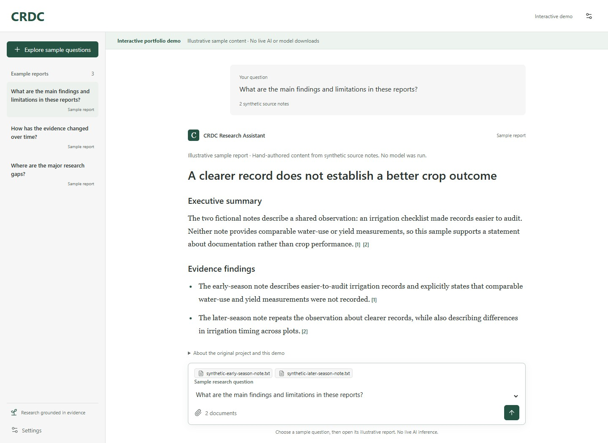

Dataset Health Analyzer
Know your data.
Before you use it.
Missing values. Duplicate rows. Unexpected types. A closer look at the data, before the next decision.
Real CSV analysis in your browser · synthetic samples
Personal portfolio
Brisbane, Australia
I build data and
cloud applications.
I’m looking for a Data / Cloud Engineering
internship or graduate role in Brisbane.
PORTFOLIO ID

Vigo Dang
Data & Cloud EngineeringOpen to workMeet the person. Explore the work.
Selected work
Three projects, three different problems.
Try the demos. Look under the hood.
Dataset Health Analyzer
Missing values. Duplicate rows. Unexpected types. A closer look at the data, before the next decision.
Real CSV analysis in your browser · synthetic samples
CRDC Research Assistant
From a research question to the passages behind an answer. Explore a source-linked research workflow.
Synthetic sources · example responses · no live AI

Retrieval / Orchestration / EvaluationStrobe AI
Posts, photos and an assistant interface. Explore the experience, then the cloud engineering behind the project.
Simulated sign-in and replies · no live AI or AWS
Beyond the work
From Vietnam to Brisbane. Usually working on a data project, finding somewhere new to eat, or stopping for a photo.
A little more about me